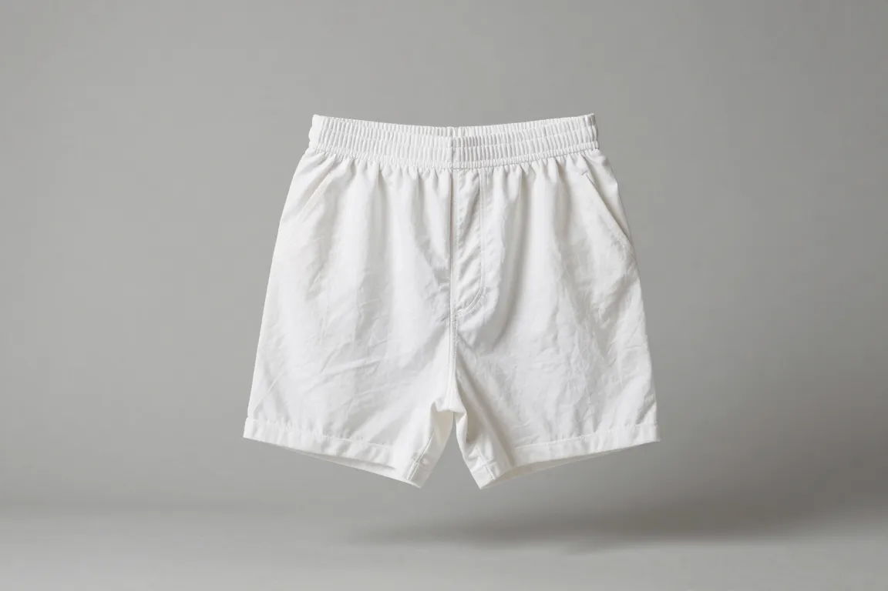

Den korte, strikkede trusen med elastisk linning og en Y-formet overlappende sliss som Coopers, Inc. i Kenosha lanserte i 1935, og som erstattet de løse underbuksene og kombinasjonen.

Kjerneidé
Herreundertøy gir støtte og bevegelsesfrihet. En kort strikket truse med innsydd linning er bedre enn en løs underbukse eller en lang drakt.
Designprinsipper
Strikk kroppen i kjemmet bomull i en tett, myk jersey, med strekk i begge retninger.
Skjær beinet kort og høyt, med en kant på øvre del av låret.
Sy en elastisk linning inn i øvre kant, 3 til 4 cm bred.
Sy en Y-formet søm foran, slik at to lag overlapper i slissen.